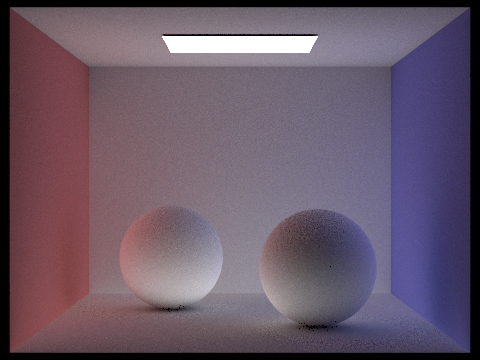

CS184/284A Spring 2025 Homework 3 Write-Up
Link to webpage: https://andywa-ng.github.io/hw-webpages-andy/
Link to GitHub repository: https://github.com/cal-cs184-student/sp25-hw3-gower-power-2
Overview
Give a high-level overview of what you implemented in this homework. Think about what you've built as a whole. Share your thoughts on what interesting things you've learned from completing the homework.Part 1: Ray Generation and Scene Intersection
Ray Generation
The first step in the rendering pipeline is ray generation. Rays are created from the camera and pass through each pixel of the image to determine what the camera "sees" in the scene.
For each pixel, multiple rays are generated for anti-aliasing. Pixel coordinates are mapped to normalized image coordinates ([0, 1] in both x and y), which are then transformed into camera space. The camera is at the origin (0, 0, 0) and looks along the -Z axis.
The ray's origin is the camera's position, and its direction is determined by the corresponding point on the virtual sensor plane (at Z = -1). The ray is then transformed into world space using the camera-to-world transformation matrix.
Ray Intersection
After ray generation, the next step is to determine if rays intersect with objects in the scene. This involves intersection tests for triangles and spheres.
Triangle Intersection
The triangle intersection algorithm uses ray-plane intersection and barycentric coordinates:
-
Ray-Plane Intersection:
- Compute the plane equation using the triangle's vertices.
- Solve for the ray parameter
twhere the ray intersects the plane. - Check if
tlies within the valid range[min_t, max_t].
-
Barycentric Coordinates:
- Compute barycentric coordinates
(u, v)of the intersection point relative to the triangle. - Check if the point lies inside the triangle by verifying
u >= 0,v >= 0, andu + v <= 1.
- Compute barycentric coordinates
-
Interpolate Normals:
- If the intersection is valid, interpolate the vertex normals using barycentric coordinates to compute the surface normal.
Sphere Intersection
-
Quadratic Equation:
- Compute coefficients
a,b, andcbased on the ray's origin, direction, and sphere's center and radius. - Solve for roots
t1andt2using the quadratic formula.
- Compute coefficients
-
Root Validity Check:
- Check if the roots are within the valid range
[min_t, max_t]. - Select the smallest valid
tvalue as the closest intersection.
- Check if the roots are within the valid range
-
Compute Normal:
- Compute the surface normal at the intersection point as the vector from the sphere's center to the intersection point, normalized.

|

|
Part 2: Bounding Volume Hierarchy
BVH Construction Algorithm
The BVH construction algorithm recursively partitions the scene primitives into a binary tree. Each node in the tree contains a bounding box that encloses all primitives in its subtree.
-
Compute Bounding Box:
- For the current set of primitives, compute the bounding box that encloses all of them.
-
Check Leaf Nodes:
- If the number of primitives is less than or equal to the maximum leaf size, create a leaf node with the computed bounding box and store the primitives.
-
Split Primitives:
- Choose the axis with the largest extent of the bounding box for splitting.
- Compute the split point as the average centroid of the primitives along the chosen axis.
- Partition the primitives into left and right groups based on the split point.
- Recursively construct the left and right child nodes using the partitioned primitives.

|

|

|
Part 3: Direct Illumination
Uniform Hemisphere Sampling
-
Creates local coordinate system with normal as Z-axis
-
Uses uniform hemisphere sampler to get random directions
-
Creates ray with epsilon offset to prevent self-intersection
-
Checks if ray hits an emissive object (light source)
-
Compute BSDF, cosine term, and light contribution
-
Normalizes by sample count and hemisphere PDF (1/(2π))
Light Importance Sampling
-
Process each light source in the scene
-
Get light direction, distance, PDF and emitted radiance
-
Create shadow ray with precise distance bounds
-
Check if path to light is unobstructed
-
Compute full lighting contribution with proper PDF
-
Optimize for delta lights that need only one sample
Uniform Hemisphere (64 samples pp, 32 light rays)
Importance Sampling (64 samples pp, 32 light rays)
With hemisphere sampling, soft shadows remain noisy and speckled even with 64 samples.
With importance sampling, these shadows are significantly cleaner with the same amount of samples.
The uniform hemisphere sampling method produces noisier results because it wastes samples on directions that don't contribute to illumination (like empty space or non-emissive objects), requiring many more samples to converge. Light importance sampling dramatically reduces noise by focusing samples on directions known to contribute light (toward actual light sources), with each sample providing more meaningful information. While hemisphere sampling handles all lighting situations uniformly, importance sampling is particularly effective for small or point light sources where uniform sampling would rarely hit the light. The tradeoff is that importance sampling requires more complex light-specific sampling code and PDF calculations, but the visual quality improvement is substantial, especially for scenes with small or directional light sources.
1 light ray
4 light rays
16 light rays
64 light rays
CBBunny.dae rendered with 1 sample per pixel with varying amounts of light rays.
Notice the soft shadows on the bunny; with more light rays, the darker parts of the shadows with the lighter parts are better distinguished.
Part 4: Global Illumination
Sampling with Diffuse BSDF
-
Sample the incoming ray with the BSDF's sampler's
get_sample method, save it to wi
-
Compute the BSDF value for the sampled direction using
f(wo, wi)
Global Illumination with up to N Bounces of Light
-
If no intersection occurs, return black or sample from the environment light
-
Return the sum of the zero-bounce radiance and radiance from at least one bounce (direct and indirect illumination)
At Least One Bounce Radiance Algorithm
-
Add one-bounce radiance (direct lighting) to the total lighting variable
L_out
-
Stop the recursion and return
L_out (only direct lighting contribution) if ray depth limit has been reached
-
Sample an incoming direction for the indirect lighting
-
Create a new ray for the indirect lighting using this sampled direction and the hit point
-
Try intersecting the scene with this new ray
-
If an intersection is found, trace the new ray by recursively calling this algorithm using the new ray and found intersection and add this radiance (the indirect lighting contribution) to
L_out. Return L_out
Global Illumination with Russian Roulette
|
|
|
The uniform hemisphere sampling method produces noisier results because it wastes samples on directions that don't contribute to illumination (like empty space or non-emissive objects), requiring many more samples to converge. Light importance sampling dramatically reduces noise by focusing samples on directions known to contribute light (toward actual light sources), with each sample providing more meaningful information. While hemisphere sampling handles all lighting situations uniformly, importance sampling is particularly effective for small or point light sources where uniform sampling would rarely hit the light. The tradeoff is that importance sampling requires more complex light-specific sampling code and PDF calculations, but the visual quality improvement is substantial, especially for scenes with small or directional light sources.
|
|
|
|
|
|
get_sample method, save it to wi
f(wo, wi)
L_out
L_out (only direct lighting contribution) if ray depth limit has been reached
L_out. Return L_out
The at_least_one_bounce_radiance algorithm must be changed to apply Russian roulette style termination.
After tracing the new ray in the last step and before adding the indirect lighting contribution to L_out, we choose to terminate the recursion with a 35% probability.
If the recursion is terminated, no lighting contribution is returned.
If the recursion continues, we scale the indirect lighting contribution by 1 / (1 - termination_probability) before adding it to L_out.
|
|

|
|
|
|

|
|
|
|
|
|
|
|
|
|
|
|
|
|
|

|
|
|
|
|
|

|
|
|
|
Part 5: Adaptive Sampling
- Get a random sample within the pixel
- Map the sample to the pixel's unnormalized coordinates
- Normalize the pixel coordinates to [0,1] x [0,1]
- Generate a ray through the normalized coordinates
- Estimate the radiance along the ray
- Accumulate the radiance
- Compute the illuminance of the sample
-
Check for convergence every
samplesPerBatchsamples. Stop sampling if the pixel has converged -
Repeat steps 1-8 up to
numSamplestimes (assuming pixel doesn't converge) - After the loop is finished, average accumulated radiance over actual number of samples
- Update pixel in sampleBuffer with computed radiance
- Update sample count for the pixel